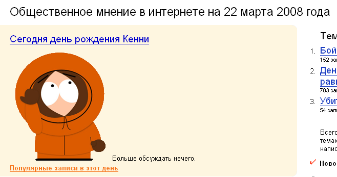

Это блог. Место, где куча записей совершенно разного характера и содержания. Могут быть и файлы, могут быть и размышения. Чтобы было проще, можно либо ориентироваться в категориях (Новости), либо улететь в облака.
Из облаков: тысячелетие, Ярославль
How To Reverse Diabetes With Reverse Your Diabetes Today e-Book
read morep>Город вовсю готовится к юбилею. Почти 3 месяца проходил открытый конкурс по созданию талисмана 1000-летия Ярославля, принять участие в котором могли все желающие. Награда за 1-ое место была объявлена в размере 70 тыс. рублей, за 2-ое и 3-ее – по 15 тыс. Остальным – поощрительные призы. Всего на конкурс было предоставлено 79 работ. В конце марта талисман был выбран:

Читать дальше »
15 апреля 2008 @ armandy
Забавное, Новости, Творчество
Из облаков: "Маленький Принц", спектакль, театр, театр-студия "Странник"
Название поста – это цитата и основная мысль всемирно известной философской сказки Антуана Экзюпери «Маленький Принц». Многие читали, многим нравится, для многих это настольная книга… А вот о существовании театра-студии «Странник» знают немногие. Уже несколько лет в репертуаре этого малоизвестного ярославского театра присутствует спектакль по мотивам «Маленького Принца». Далее мой рассказ о знакомстве с театром и о самом спектакле… Читать дальше »
14 апреля 2008 @ armandy
Медиа, Творчество
Из облаков: термодинамика, учеба
не_позитивно, но САБЖ.
вопросы к экзамену по термодинамике
13 апреля 2008 @ ErliZz
Студенты
Из облаков: материалы-для-учёбы-весной-2008, ЭД СВЧ
Закачал методичку по ЭД СВЧ:
9 апреля 2008 @ Eunix
Студенты
Из облаков: @regruppa.ru, GMail Art, Google Apps, блог, видео, новый сервер, почта Google, регруппа, сайт
Давно у нас не было никакой технической информации. А ведь произошло несколько интересных событий. Например, мы купили собственный сервер (хоть и виртуальный), который работает быстрее в 12 (двенадцать!) раз. Мы надеемся, что это поможет нашему блогу (и сайту в том числе) стать ещё лучше.
А также… также теперь у нас почта на Google (спасибо Google Apps). То есть мы можем предоставить почту вида
пользователь@regruppa.ru
— всего 100 адресов, поэтому для своих точно хватит! Кому необходимо: напишите здесь комментарий.
Читать дальше »
24 марта 2008 @ Eunix
Новости
Из облаков: 22 марта, День-рождения, Кенни, Яндекс
Да, это так. У Кенни Маккормика 22 марта День рождения.

— даже Яндекс отличился.
22 марта 2008 @ Eunix
Новости
Из облаков: eunix, PaparaZzi, кафе, Сказка, Элина, Ярославль
Вчера, 17 марта 2007 года, я и Eunix решили немного погуляться по городу, так как погода была очень шикарная: настоящая солнечная и теплая весна!!! Дома сидеть в этот день было просто преступление!!! :) Город , действительно, красивый в лучах яркого солнца! :)) Гуляли в районе улицы Свободы, очень устали и решили зайти в первое кафе, которое встретим на пути : этим кафе и оказалось «PaparaZzi». Очень приятное и уютное кафе показалось мне с первого взгляда, похоже на маленький музей: множество раритетных фотоаппаратов повсюду и фотографиями в рамках украшены все стены!

А вокруг всего этого изобилия стоят столики :) Зашли, сели за первый попавшийся столик… и… Читать дальше »
18 марта 2008 @ Elina
Забавное, Студенты
Из облаков: 9-марта, масленица-2008, масленица-ФФ, ФизФак, ФизФак-ЯрГУ
ПрофбюроФФ сообщает о Масленице ФФ:
9 марта на Прусовских карьерах состоится МАСЛЕНИЦА ФФ.
Массовые народные игры, масленичная эстафета (команда 10 человек независимо от пола), блины, перетягивание каната и многое-многое другое! Поджигание чучела
Приглашаем всех к участию! Проезд на Прусовские карьеры — 22 автобус, остановка Средний поселок. Также есть автобусы рейсовые, которые останавливаются прямо у карьеров, со станции Филино (заволгой, остановка Красноборская), расписание напишу позже..
На масленицу приглашаются команды всех факультетов (по одной от каждого, а также любые команды студентов и аспирантов ФФ).
Кто-нибудь собирается? =) P.S. Зачем делать объявления на закрытом ресурсе?
3 марта 2008 @ Eunix
Новости
Из облаков: 21-февраля, vkontakte, ангелочек, Виталий, подарок, почта-России, Элина
В пятницу 29 февраля был последний зимний день!;) А для меня этот день оказался счастливым!!!!! :) Потому что именно тогда в своём почтовом ящике я обнаружила квитанцию, свидетельствующую о том, что пришла бандероль….
Читать дальше »
3 марта 2008 @ Elina
Забавное